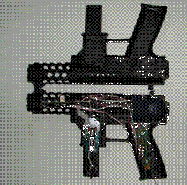
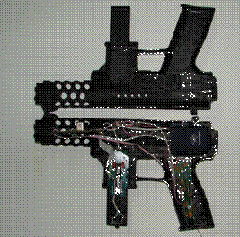

Results and envisaged future work
Results
The figure below show the end products.
 


Future work
The future work will entail refining our devices by using advanced filtering and adding haptic feedback. The feedback system may be in the form of electromagnetic actuators that apply a reverse force and give the feeling of force feedback. The feedback system can be even as simple as a spring or elastic rubber band to give a force in opposite direction.
For the Glove project small vibrating motors of cell phones along with a traction spring can be built into the module and powered by the same microcontroller to give a feeling of force feedback. In our design we have stiffened the tubing by applying extra layers of rubber adhesive on the tube to make it slightly hard giving a force feedback effect. Once this glove is combined with suitable software it can be used to interact with virtual objects inside the screen using our hands. These devices can even be used to teach sign language or in a CAVE like simulation environment.
The VR Gun project can use compressed air or carbon-dioxide activated actuator which is fired at trigger press to give a small jolt. The other option is to use a small spring loaded electromagnet which is actuated at trigger press and released instantly under spring force to give a feeling of force feedback. Such a electromagnet is commercially available for around Rs40/- in the local market. We could not get one as it was out of stock.
We intend to further enhance this weapon interface by using multiple sensors (magnetometers etc) all commercially available components to provide a reference source against gyro drift and use a higher end microcontroller that has an RTOS to provide continuous correction and make the device sub pixel accurate from its present pixel level accuracy. Once implemented this position and orientation tracker has tremendous applications as navigation systems (inertial as a backup to GPS systems) and other VR devices can also use these implementations.
Components
We mention only major components. Accelerometers from STM and Freescale semiconductor, both the companies provided us with evaluation boards. The Freescale implementation was wireless and the STM wired, both emulated serial ports via USB. The ADI sensor could not be successfully evaluated as it was preproduction variety. The MG110 gyro from UltraGyration was successfully used. We successfully implement several microcontrollers from Atmel and PIC during the course of evaluation. Max232 from MAXIM was also used for direct serial data transfer.